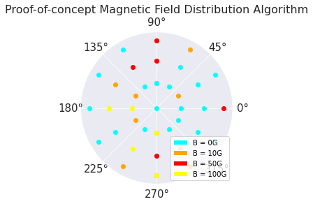
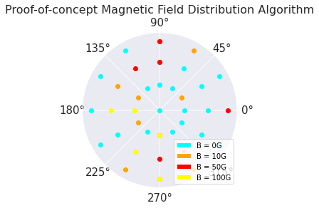

Overview
I worked under Dr. Irina Kitiashvili on the characterization of stellar jitter at NASA Ames. Exoplanets, especially earth-size exoplanets are very hard to detect given the vast distances involved in astronomy. The radial velocity method of exoplanet detection takes advantage of the mechanics of a two-planet system; as a star-planet system orbit around their barycenter, the spectrum observed from the star is effected by the doppler shift. Since direct stellar observations are much easier than observations on exoplanets, we can infer the existence of exoplanets by observing their host star.
This method is not without its own fair share of challenges. The movement of stars due to exoplanets can be extremely minute , especially in earth-class exoplanets. As such, we need extremely precise measurements of solar spectra, and we must account for the motion of the observing instrument, and "suprious Doppler shifts 'jitter' must be mitigated or corrected" (Wright 2025). A major source of this stellar jitter and the focus of this project is convective dynamics in stellar photospheres— granulation (Bastien et. al, 2016) and stellar magnetic effects.
I was tasked with first, using a reference solar spectrum, identifying Iron 1 spectral lines in observations of a test bed star (HD209458) with a known exoplanet and produce mean profiles of the lines. This was used to calibrate iron abundance for future use. We then utilized NASA Ames's Pleiades HPC cluster and utilized parallelized simulation algorithms to schedule and run hydrodynamic simulations of stellar convection. The time series is then processed through a variety of post-processing scripts, and we analyze the resulting data. I focused on inclusion of magnetic effects in the simulation, as well as experimented with machine learning algorithms like RNNs to reduce noise.
A major accomplishment I had through this program is streamlining the simulation setup pipeline; the old script was written in IDL, a relatively antiquated language by today's standards. Runtime was slow, taking away 5-10 minutes of time for each run. Parameters were hard-coded into the script, using more time if one were to misplace a parameter or forget to change a line. Finally, the script required two runs- one initial setup step and a final concluding step. Noticing the issues, I decided to do a code review, translate functionality, and add flexibility by converting the script to Python. I ran comparisons between the old script and new script with identical parameters to ensure data were consistent, and added easy tweaking and documentation of input parameters, as well as introduced consideration of magnetic effects into the setup pipeline, all while reducing runtime by over 70% through vectorization and other optimization techniques.
Through my experience, I learned a lot about computational physics, data analysis and machine learning, as well as a peek into the world of academia. Special thanks to Irinia Kitiashvili for being a great mentor; she always kept the mood lighthearted and fun while keeping us on track with work.
Technologies / Skills
Python (numpy, matplotlib, pandas, scikit-learn), Computational Physics, High Performance Computing, Data analytics, Machine Learning.
References
Bastien, Fabienne & Stassun, Keivan & Basri, Gibor & Pepper, Joshua. (2015). A Granulation "Flicker"-based Measure of Stellar Surface Gravity. 10.48550/arXiv.1512.03454.
Wright, Jason & Gupta, Arvind. (2025). Radial Velocities as an Exoplanet Discovery Method. 10.1007/978-3-319-30648-3_4-2.